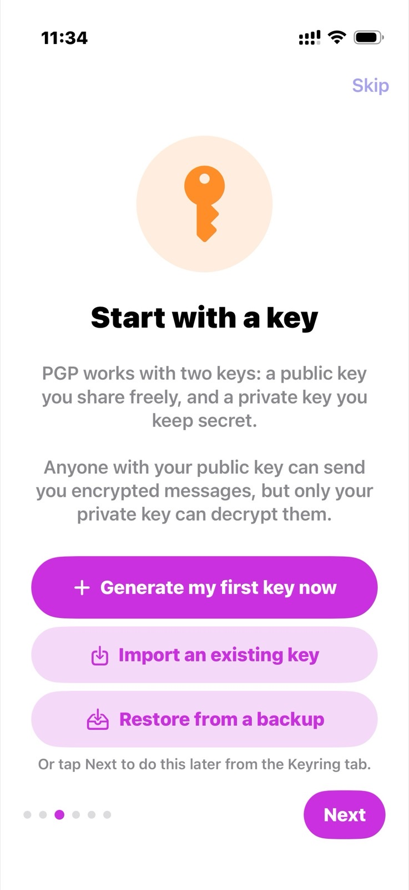
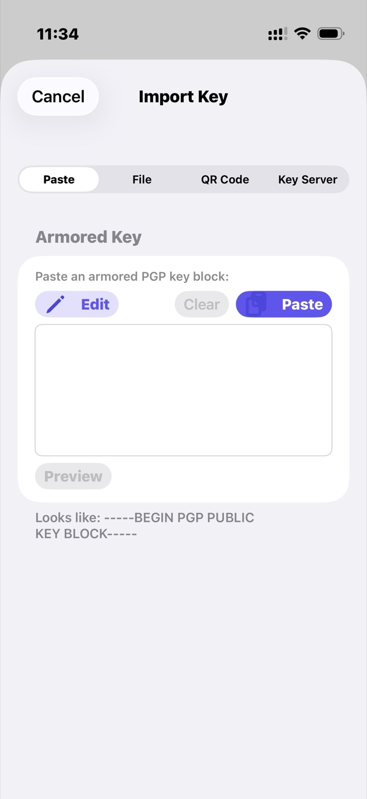

(5)편에서 정리한 결론 그대로 해보기로 했다 — PGPony 앱이 아니라, 에어갭 리눅스에서 GnuPG로 직접 키를 만들고 keytocard로 유비키에 올리는 방식. 가지고 있던, 인터넷 모듈 자체를 물리적으로 제거해둔 데비안(trixie) 노트북을 꺼냈다.
마스터키와 서브키 만들기
gpg --expert --full-generate-key로 마스터(Certify) 키부터 만들었다. ECC Curve25519(Ed25519), 용도는 서명 인증(Certify) 전용, 만료 없음, UID는 이메일 없이 owlkey로만. 패스프레이즈는 24자 이상으로 새로 정해서 머릿속에 외우고, 종이에도 백업과 분리해서 따로 적어뒀다.
그다음 --expert --edit-key로 들어가서 addkey를 세 번 — 서명(Ed25519), 암호화(Cv25519), 인증(Ed25519) 서브키를 각각 만들었다. 전부 2년짜리 만료(2028-09-09)로 뒀다. 마스터키는 만료 없이 오래 살아남고, 서브키는 주기적으로 갱신하는 구조다.
공개키, 시크릿 마스터키, 시크릿 서브키, 그리고 자동 생성된 폐기 인증서(revocation cert)까지 내보내서, 일회용 GNUPGHOME에 복원 테스트를 해본 다음 — 유비키 2개로 각각 FIDO2 언락이 가능한 LUKS2 암호화 USB 두 개에 나눠 백업했다. 유비키가 두 개라 한쪽을 잃어버려도 다른 쪽으로 열 수 있다.
scdaemon이 없어서 한 번 막혔다
gpg --card-status를 쳤더니 "No SmartCard daemon" 에러가 떴다. 이 노트북엔 애초에 scdaemon/pcscd가 설치돼 있지 않았던 거다. 근데 이 기계는 인터넷이 아예 없는 에어갭이라 apt install 자체가 불가능하다.
그래서 맥에서 데비안 13(trixie) amd64용 .deb 파일 10개(scdaemon, pcscd, libccid 등 의존성 전부)를 직접 받아서, packages.debian.org에 공개된 SHA256 체크섬이랑 하나하나 대조했다. 전부 일치하는 걸 확인하고 USB로 옮겨서 sudo dpkg -i *.deb로 설치 — 깔끔하게 끝났고, gpg --card-status도 그제서야 정상 작동했다.
usb-open.sh가 하마터면 사고칠 뻔했다
백업용 USB를 준비하려고 예전에 만들어둔 개인 자동화 스크립트 usb-open.sh를 돌렸다. 이 스크립트는 열려는 LUKS 파티션을 "기존에 있는 crypto_LUKS 파일시스템을 찾아서" 자동으로 고르는 방식이었는데, 목표 USB가 아직 LUKS로 포맷되기 전이라 아무것도 못 찾았고 — 조용히 /dev/sda3, 그러니까 지금 부팅 중인 노트북 자체의 루트 디스크를 대신 골라버렸다.
다행히 cryptsetup이 "이미 사용 중인 장치"라며 안전하게 거부해서 실제 피해는 없었다. 근데 스크립트가 내놓은 에러 메시지가 PIN 오류처럼 애매하게 보여서 처음엔 원인 파악에 시간이 좀 걸렸다. 자동으로 디스크를 골라주는 스크립트, 특히 포맷처럼 되돌릴 수 없는 작업을 하는 스크립트는 읽어보지 않고 믿으면 안 된다는 걸 다시 한번 느꼈다.
결국 USB 암호화는 스크립트 대신cryptsetup luksFormat+systemd-cryptenroll --fido2-device=auto명령어를 직접 쳐서 끝냈다.
지문(fingerprint)을 손으로 옮겨적다가 두 글자를 틀렸다
키 지문을 기록해두려고 손으로 옮겨적었는데, 40자리 16진수 중 두 그룹을 틀리게 적었다. 6010을 6018로, 0993을 8993으로. 4자리씩 묶어서 실제 값이랑 하나하나 대조해보고서야 어디가 틀렸는지 잡아낼 수 있었다. 공개해도 되는, 비밀도 아닌 40자리 식별자조차 손으로 옮기면 이렇게 쉽게 틀린다는 게 새삼스러웠다.
최종 지문: 2B6C 9276 36C3 CE01 89BD 89F2 6010 771A 0993 AD18
PIN이 왜 4개나 따로 있는지
keytocard를 실행하면서 "Admin PIN"을 넣으라길래 잠깐 헷갈렸다. 정리해보니 물리적으로 하나인 유비키 안에 FIDO2 PIN, PIV PIN, OpenPGP User PIN, OpenPGP Admin PIN — 완전히 독립된 4개의 PIN 체계가 따로 존재하고 있었다. 애플/구글/X 로그인에 쓰던 FIDO2 PIN이랑은 전혀 다른 애플릿, 다른 AID라서 오늘 새로 만든 OpenPGP 설정이 기존 2단계 인증 용도랑 서로 간섭할 걱정은 없다는 것도 확인했다.
keytocard와 터치 정책
서브키 세 개를 keytocard로 전부 유비키(시리얼 0006 32443137)에 올렸다. gpg -K로 보면 ssb>로 표시되는데, 이게 카드로 넘어갔다는 뜻이다. 이 과정은 한 방향으로만 가능해서, 로컬에 남아있던 진짜 개인키 사본은 이제 카드 참조용 스텁으로 바뀌었고 — 완전한 사본은 아까 만들어둔 백업 USB 두 개에만 남아있다.
그다음 gpg --edit-card → admin → uif 1 on / uif 2 on / uif 3 on으로 세 슬롯 전부 터치 정책(UIF)을 켰다. 혹시 악성 앱이 카드가 꽂혀있는 틈을 타 몰래 서명·복호화를 시도하더라도, 물리적으로 유비키를 직접 터치해야만 실행되게 만들어둔 거다.
공개키를 QR로 아이폰에 옮겼다
공개키를 다시 내보내서 맥으로 가져온 다음, 파이썬 qrcode 라이브러리로 화면에 QR 코드를 띄우고 PGPony 앱의 "Import Existing Key" → QR Code 탭으로 그대로 스캔했다. 파일 전송이 한 번도 필요 없었다.


하드웨어 키 연결하고, 암호화·복호화 테스트
키링에서 방금 가져온 키를 열고 "Add Hardware Key" → "Scan Hardware Key"로 유비키를 아이폰 상단에 갖다 댔다. 사실 공개키를 가져오기 전에 한 번 먼저 시도해봤는데, 그때는 "일치하는 공개키를 찾을 수 없음"이라고 정직하게 실패했다 — 근데 이게 오히려 좋은 신호였다. NFC로 카드에서 서명 서브키 지문(...4506A4DB)을 정확히 읽어왔다는 뜻이었으니까. 공개키를 QR로 가져온 다음 다시 스캔하니 "This key is now linked to your hardware key"로 성공했다.
마지막으로 PGPony 안에서 나 자신에게 짧은 메시지를 암호화+서명해서 만들고, Decrypt 탭에서 복호화까지 해봤다. OpenPGP User PIN을 입력하고 (Admin PIN이 아니다 — Admin PIN은 keytocard나 PIN 변경 같은 카드 관리 작업에만 쓰이고, 평소 서명/복호화엔 User PIN을 쓴다) 유비키를 터치하니, 왕복이 정확히 성공했다.
이제 아이폰 하나, 유비키 하나로 서명도 암호화도 복호화도 전부 끝난다. 개인키는 처음부터 끝까지 카드 밖으로 한 번도 나오지 않았다.